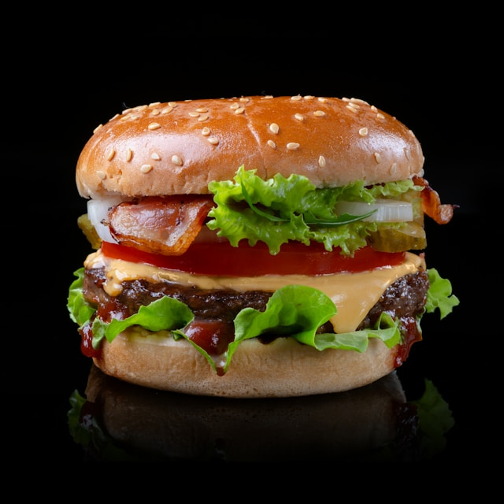

Home
Black Bean Veggie Burger

Description
A black bean veggie burger is a hearty, plant-based patty made from mashed black beans, breadcrumbs, and seasonings, often blended with vegetables like corn and onions. Grilled or pan-seared to crispy perfection, it provides a healthy, fiber-rich, and meat-free alternative to traditional burgers.
Ingredients:
- cooking spray
- 1 (16 ounce) can black beans, drained and rinsed
- ½ green bell pepper, cut into 2 inch pieces
- ½ onion, cut into wedges
- 3 cloves garlic, peeled
- 1 egg
- 1 tablespoon chili powder
- 1 tablespoon ground cumin
- 1 teaspoon Thai chili sauce or hot sauce
- ½ cup bread crumbs
Steps:
- Preheat an outdoor grill for high heat. Lightly coat a sheet of aluminum foil with cooking spray.
- Mash black beans in a medium bowl with a fork until thick and pasty.
- Finely chop bell pepper, onion, and garlic in a food processor. Stir chopped vegetables into mashed beans.
- Combine egg, chili powder, cumin, and chili sauce in a small bowl; stir into mashed bean mixture to combine. Mix in bread crumbs until mixture is sticky and holds together.
- Divide mixture into four patties; place on the prepared foil.
- Grill on the preheated grill for about 8 minutes on each side.
- Serve hot and enjoy!